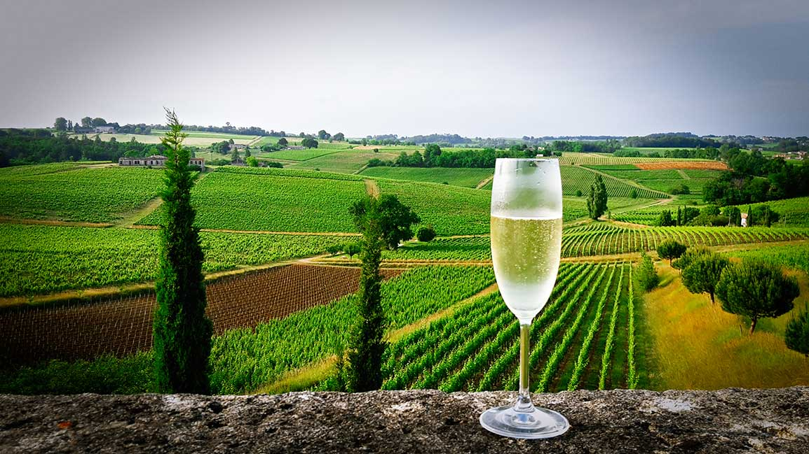
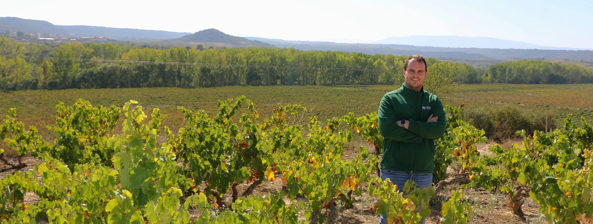
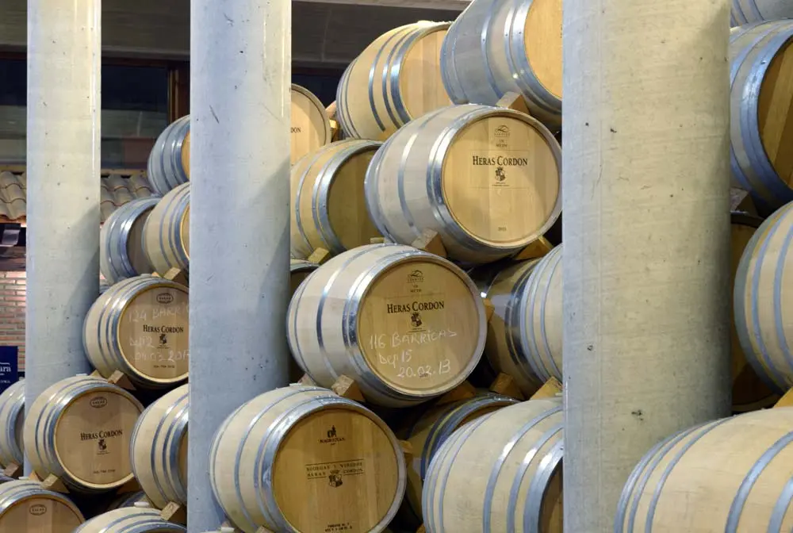
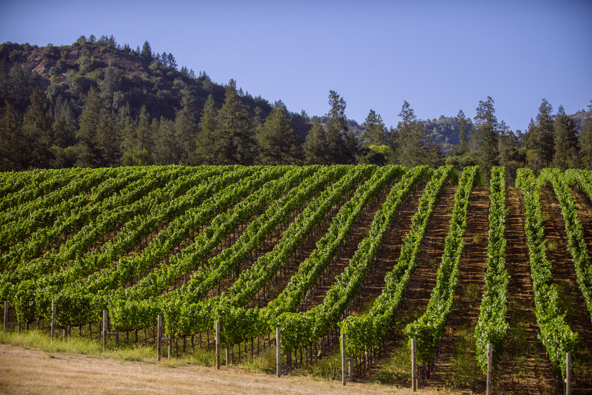
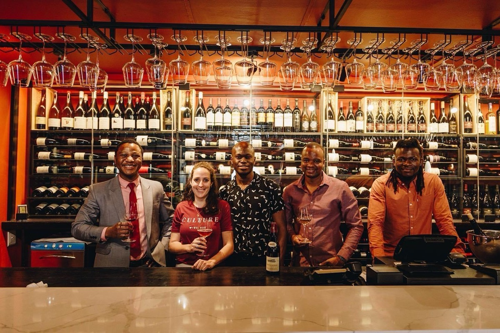

Enotri Wine ImportsAlberta, Canada
The ground before the label.
Wines from growers who care for the land, chosen for the people and places they come from.
The soil was here first.
Before a bottle is named, a place has already shaped it. Enotri begins with that place.


Somebody keeps it alive.
We look for the growers who stay close to the work. Their wines carry the mark of a person, not the polish of a campaign.
Ripeness has a memory.
Harvest and cellar work are not steps to hide. They are where the character of a place becomes something you can share.
Weather, soil, and the work of the season.
Fruit picked when the place says it is ready.
Time and restraint, with nothing added for show.

Bring us the ground you have.
The estate is not a stage set. It is the long record of a family, a region, and a way of working.
A founder-led bridge between growers with something true to say and the tables, shops, and restaurants of Alberta.

Good wine leaves room at the table.
Explore the current portfolio, request a price list, or talk with us about a wine presentation or dinner.
Write to Enotri about what you are planning.
